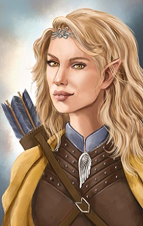
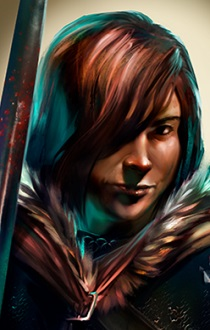
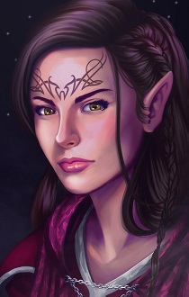
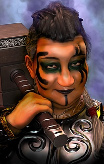
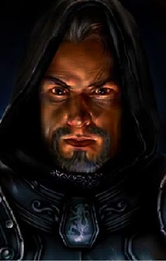
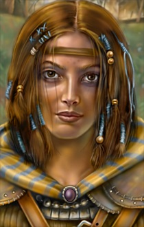

New Friends. New Adventures.

Enter the rich world of Baldur's Gate once again with several new mods to download to join your adventurers.
Explore a variety of personalities, from an elitist elf shadowdancing mage to a dashing, pint-sized halfling barbarian. Or enjoy expansions to already existing characters in Wings and Nalia At Last.

Within the mods, you can find:
- Original characters with their own quests, backgrounds, and interactions with original Bioware and Beamdog NPCs.
- Original Kits, spells, and items tailored to the character's background.
- Content for BG:EE, SoD, and BG2:EE, with original NPCs spanning the entire trilogy.
- Original music, created from scratch with Sibelius and the East West Instrument Library..
- Friendships to be made and Romances to bloom, and some tweaks to the original formula for a more immersive experience.